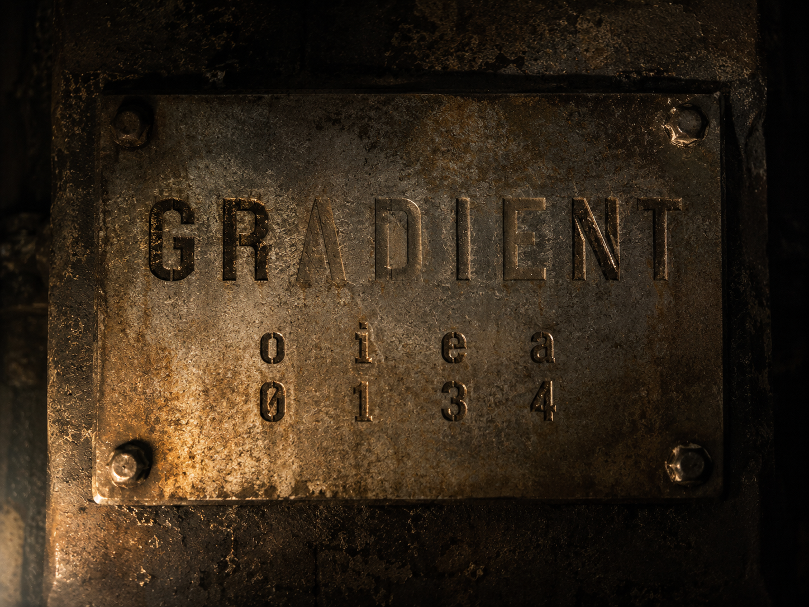

▒▒▒▒▒▒▒▒▒▒▒▒▒▒▒▒▒▒▒▒▒▒▒▒▒▒▒▒▒▒▒▒▒▒ · D E S C E N T · 08 / 40 · ▒▒▒▒▒▒▒▒▒▒▒▒▒▒▒▒▒▒▒▒▒▒▒▒▒▒▒▒▒▒▒▒▒▒

The dials are called weights. Nudged, epoch after epoch, toward one skill. The slope they slid down has a name.
gradient
the load's name is here. spell it in machine numbers — a→4 i→1 e→3.